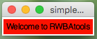

Welcome
This library was designed to use in the classroom
It has no dependencies, other than Python 3.x
It does not require installing, simply unzip and go
It is meant to be as simple as possible to get started with
Allowing pupils to focus on learning programming & problem solving, not tkinter and GUI building
Let's make a sandwich
Building a GUI is just like making a sandwich!
You need a slice of bread on the top and bottom, and then a bunch of fillings in the middle...
# import the library
from rwbatools import gui
app = gui() # top slice - CREATE the GUI
# fillings go here...
app.go() # bottom slice - START the GUI
If you forget the bread on the bottom, everything falls apart!
Oh, and if you try to put fillings under the bottom-slice, they won't be in the sandwich!
Add some fillings...
When making a sandwich, you could just stuff it with fillings:
addFilling('cheese', 'chedar')addFilling('ham', 'smoked')
But it's often nice to prepare the fillings too:
setFilling('cheese', 'grated')setFilling('ham', 'sliced')
# import the library
from rwbatools import gui
app = gui() # top slice - CREATE the GUI
app.addLabel("title", "Welcome to RWBAtools") # add a label
app.setLabelBg("title", "red") # set the label's background to be red
app.go() # bottom slice - START the GUI

And, that's it...
The more fillings you put in your sandwich, and the more time you spend making them look nice, the better it will taste!
Foot-long sub?
Of course, for most of us, a simple sandwich isn't enough...
We want to make a meal out of it!
In which case, you're going to want to arrange your fillings a bit more cleverly!
- Meat on the bottom
- Then the cheese
- Then some salad
- Finally the sauce!
The arrangement is paramount, nobody wants the sauce under the meat!
By default, the fillings are simply stacked on top of each other.
However, filling a sub is very similar to filling a spreadsheet.
Simply tell each filling what layer (row) it's on, and what column it's in.
And, if you're not planning on chopping a filling, it might stretch (span) across more than one column.
See here for more.
from rwbatools import gui
# function called by pressing the buttons
def press(btn):
if btn=="Cancel":
app.stop()
else:
print("User:", app.getEntry('user'), "Pass:", app.getEntry('pass'))
app = gui()
app.addLabel("title", "Welcome to RWBAtools", 0, 0, 2) # Row 0, Column 0, Span 2
app.addLabel("user", "Username:", 1, 0) # Row 1, Column 0, no span
app.addEntry("user", 1, 1) # Row 1, Column 1, no span
app.addLabel("pass", "Password:", 2, 0) # Row 2, Column 0, no span
app.addSecretEntry("pass", 2, 1) # Row 2, Column 1, no span
app.addButtons(["Submit", "Cancel"], press, 3, 0, 2) # Row 3, Column 0, Span 2
app.setEntryFocus("user")
app.go()

Any extras?
It's possible to make changes to how the GUI looks
For starters, you can specify a name and size for your GUI when you make it:
app=gui("Login Window", "400x200")
And, you can choose what kind of bread, and whether it's toasted:
app.setBg("Brown")app.setFont(20)
See here for more.

Make your own!
That's about it for now.
Have a look around, discover all of the different fillings available.
And, investigate how best to present your sandwich!